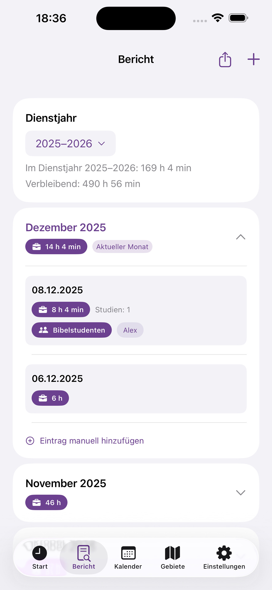
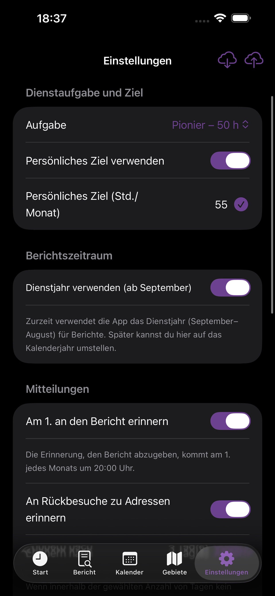

Für iPhone & iPad • Version 1.8 • 35+ Sprachen
Dein kompletter Begleiter für Predigtdienst & Pionierdienst
JW Ministry (Ministry Planner) vereint alles in einer privaten iOS-App: präziser Dienst-Timer mit Live Activities, Übersicht deiner Bibelstudien, Dienstjahresberichte, Pionier-Stundenziele und detaillierte Gebietskarten.
35+
Sprachen verfügbar
100%
Offline & Privat
iPhone & iPad
Natives iOS-Design
Werbefrei
Keine Abos


Alle Ansichten von JW Ministry im Überblick
Echte Screenshots der deutschen App-Oberfläche — vom Dienst-Timer und den Bibelstudien bis zum Pionier-Kalender, den Gebieten und dem OLED-Dunkelmodus.



Alle Werkzeuge für einen gut organisierten Dienst
Abgestimmt auf Verkündiger, Hilfspioniere, allgemeine Pioniere und Sonderpioniere.
Timer, Widgets & Dynamic Island
Starte den Timer direkt vom Home-Bildschirm oder Sperrbildschirm und verfolge ihn live in der Dynamic Island.
Bibelstudien & Lektionsfortschritt
Verknüpfe Studien direkt mit deinen Berichtseinträgen und behalte Lektion und Abschnitt im Blick.
Pionierrollen & persönliche Ziele
Unterstützt 15, 30, 50, 90 und 100 Stunden sowie individuelle Monatsziele.
Dienstjahr (Sept.–Aug.) & Kalender
Plane Predigtdiensttreffen und den Familienabend und wandle geplante Termine per Wischgeste in Berichtseinträge um.
Gebiete, Mehrfamilienhäuser & Rückbesuche
Verwalte Gebiete mit Fotos, Farbmarkierungen, Volltextsuche und automatischen Rückbesuch-Erinnerungen.
100 % Datenschutz auf deinem Gerät
Keine Registrierung, keine Server. Alle Daten bleiben lokal auf deinem iPhone/iPad mit einfachem Backup in iCloud Drive.
Entwickelt für jeden Bereich deines Predigtdienstes
Wie JW Ministry Verkündiger, Hilfspioniere, allgemeine Pioniere und Sonderpioniere durch das gesamte Dienstjahr begleitet.
🎯 Allgemeine Pioniere & Sonderpioniere (50, 90 & 100 Stunden / Dienstjahr)
Behalte dein Monatsziel von 50 Stunden sowie das Jahresziel von 600 Stunden im Dienstjahr von September bis August mühelos im Blick. Lege bei Bedarf ein persönliches Monatsziel (z. B. 55 Std.) fest und vergleiche im Kalender deine geplanten Stunden mit den tatsächlich berichteten Stunden.
📅 Hilfspioniere (15 & 30 Stunden) und Versammlungsverkündiger
Wechsle für besondere Aktionsmonate, die Dienstwoche oder die Gedächtnismahlzeit einfach zur Rolle Hilfspionier (15 oder 30 Std.). Eine automatische Erinnerung am 1. jedes Monats um 20:00 Uhr erinnert dich zuverlässig an die Abgabe deines Predigtdienstberichts.
🏘️ Haus-zu-Haus-Gebiete, Mehrfamilienhäuser & Rückbesuche
Erstelle digitale Gebietskarten mit Fotos, 10 Farbmarkierungen und einem Wohnungsgenerator für Mehrfamilienhäuser nach Aufgängen und Etagen. Erfasse „Erster Besuch“, „Nicht zu Hause“ oder „Kein Interesse“, durchsuche alle Notizen nach Adresse oder Namen und lasse dich automatisch an fällige Rückbesuche erinnern.
📖 Bibelstudien-Fortschritt & moderne iOS-Alternative zu älteren Apps
Dokumentiere für jeden Studierenden das aktuelle Studienhilfsmittel (z. B. „Glücklich – für immer!“), die Lektion und den Abschnitt. Mit Live Activities, Dynamic Island, Widgets und OLED-Dunkelmodus ist JW Ministry der moderne Nachfolger für ältere Apps wie ServicePlanner oder MyTime.
🌍 Vollständig übersetzt in über 35 Sprachen
App, Widgets und Mitteilungen passen sich automatisch der Systemsprache deines Geräts an:
English
Русский
Español
Deutsch
Português (Brasil)
Français
Italiano
Polski
Українська
Nederlands
Čeština
Slovenčina
Magyar
Română
Български
Ελληνικά
Türkçe
한국어
日本語
繁體中文
ไทย
Bahasa Indonesia
Filipino
हिन्दी
ქართული
Lietuvių
Hrvatski
Srpski
Shqip
Dansk
Svenska
Norsk Bokmål
Suomi
Afrikaans
Ikinyarwanda
❤️ Unabhängiges & werbefreies Projekt
Unterstütze die Weiterentwicklung von JW Ministry
JW Ministry ist komplett kostenlos und werbefrei. Wenn dir die App im Dienst hilft, kannst du zukünftige iOS-Updates und die jährliche Apple-Developer-Gebühr unterstützen:
💳 Per Karte unterstützen (Weltweit)
Einfache Unterstützung über Boosty oder Patreon:
⚡ Direkte Krypto-Spende (0 % Gebühr)
Direkt auf das Wallet des Entwicklers:
USDT (nur TRC-20 / TRON-Netzwerk):
TQQxYhThQGngj887Lvq9TnKtyyYMcUDFNw
TON / USDT (TON-Netzwerk):
UQBNBroTUyMG0YqgiHGXwVKO_rKe5d2y7gXqvICREjBwuKYk
⚠️ Sende an die Adresse TQQx... ausschließlich Token im TRON-Netzwerk (TRC-20).
Häufig gestellte Fragen
Wo werden meine Berichte und Gebietsnotizen gespeichert?
Ausschließlich lokal auf deinem iPhone oder iPad. Es gibt keine externen Server.
Wie übertrage ich meine Daten auf ein neues iPhone?
Tippe in den Einstellungen oben rechts auf das Cloud-Upload-Symbol, um ein komplettes Backup in iCloud Drive zu sichern, und spiele es auf dem neuen Gerät wieder ein.
Wie funktionieren Erinnerungen an Rückbesuche?
Unter Einstellungen → Mitteilungen kannst du festlegen, nach wie vielen Tagen ohne neuen Eintrag du an einen Rückbesuch erinnert werden möchtest.
Wird das Dienstjahr von September bis August unterstützt?
Ja, alle Monats- und Jahresübersichten rechnen automatisch nach dem Dienstjahr von September bis August.
Funktioniert die App im Predigtdienst auch komplett ohne Internet?
Ja, alle Funktionen wie Timer, Gebietskarten, Wohnungslisten und Bibelstudien funktionieren zu 100 % offline auf deinem Gerät.
Kann ich geplante Termine aus dem Kalender direkt in den Bericht übernehmen?
Ja, wische im Kalender einfach über einen geplanten Predigtdiensttermin und tippe auf „In den Bericht“.